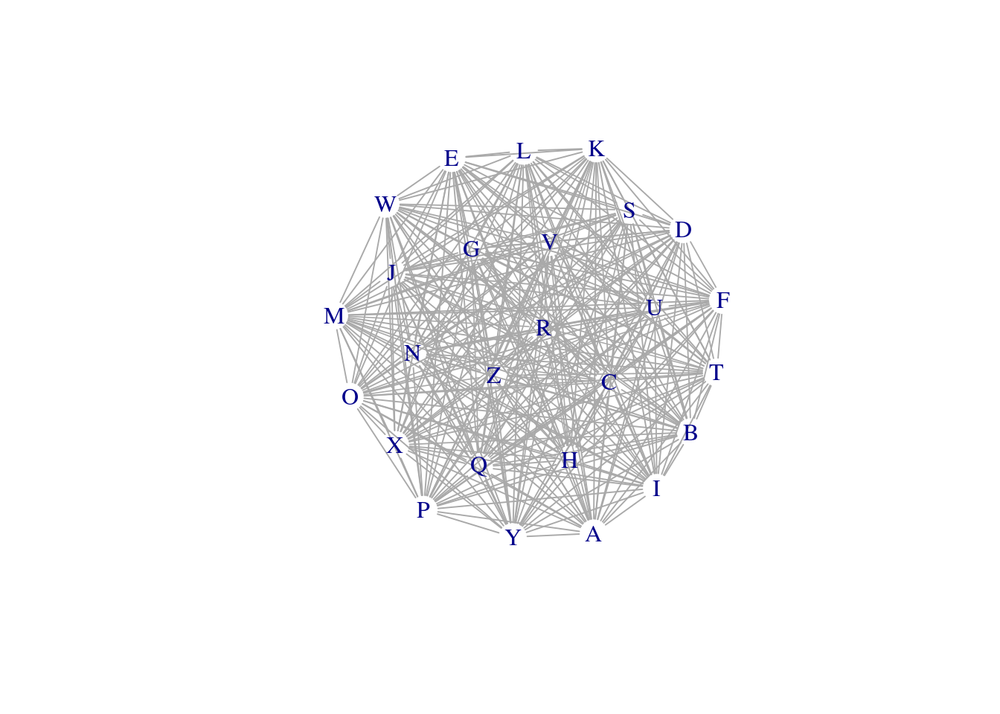
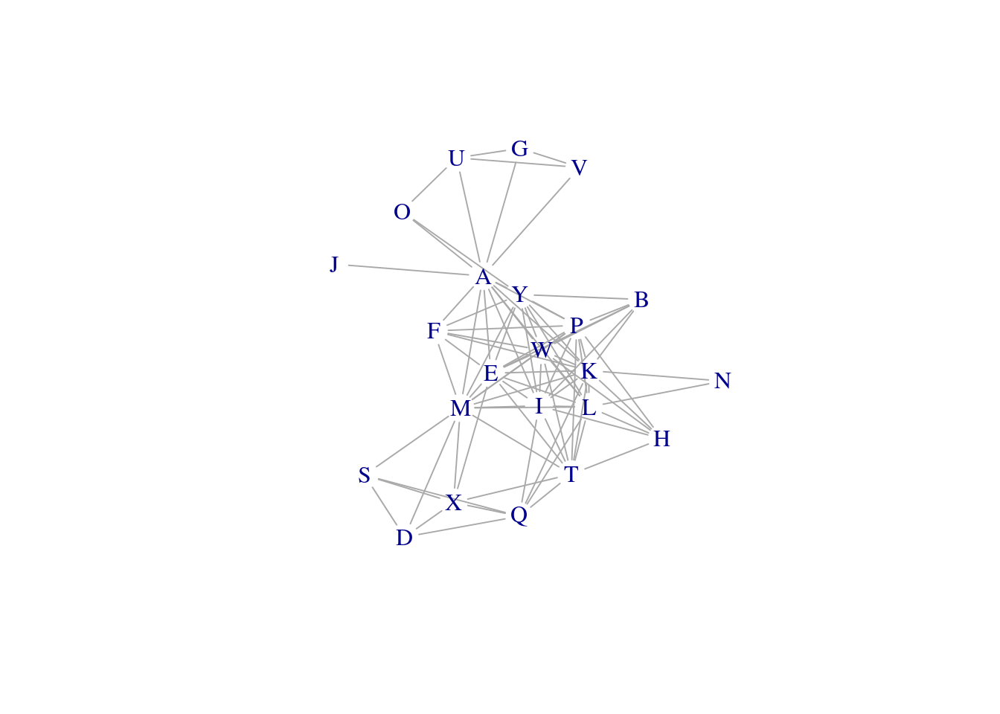
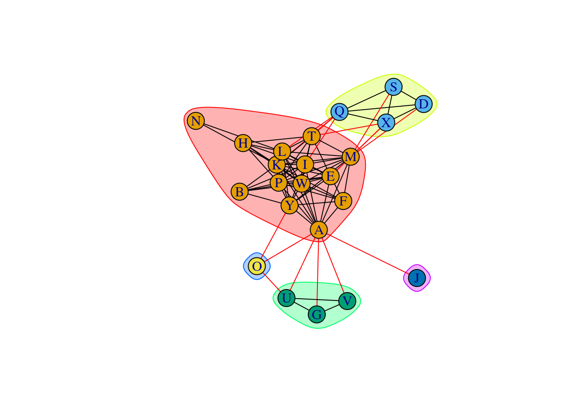
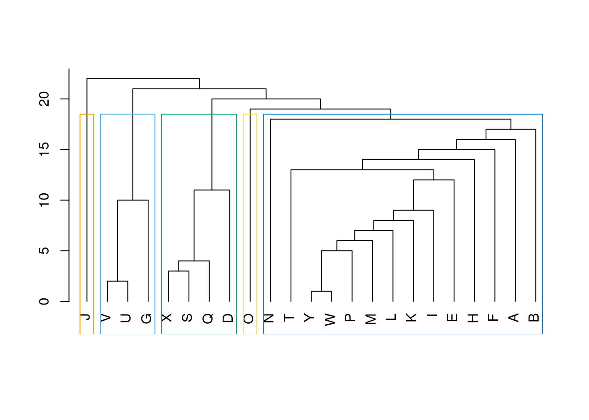

Last updated: 2022-11-04
Checks: 7 0
Knit directory: muse/
This reproducible R Markdown analysis was created with workflowr (version 1.7.0). The Checks tab describes the reproducibility checks that were applied when the results were created. The Past versions tab lists the development history.
Great! Since the R Markdown file has been committed to the Git repository, you know the exact version of the code that produced these results.
Great job! The global environment was empty. Objects defined in the global environment can affect the analysis in your R Markdown file in unknown ways. For reproduciblity it’s best to always run the code in an empty environment.
The command set.seed(20200712) was run prior to running
the code in the R Markdown file. Setting a seed ensures that any results
that rely on randomness, e.g. subsampling or permutations, are
reproducible.
Great job! Recording the operating system, R version, and package versions is critical for reproducibility.
Nice! There were no cached chunks for this analysis, so you can be confident that you successfully produced the results during this run.
Great job! Using relative paths to the files within your workflowr project makes it easier to run your code on other machines.
Great! You are using Git for version control. Tracking code development and connecting the code version to the results is critical for reproducibility.
The results in this page were generated with repository version c15c249. See the Past versions tab to see a history of the changes made to the R Markdown and HTML files.
Note that you need to be careful to ensure that all relevant files for
the analysis have been committed to Git prior to generating the results
(you can use wflow_publish or
wflow_git_commit). workflowr only checks the R Markdown
file, but you know if there are other scripts or data files that it
depends on. Below is the status of the Git repository when the results
were generated:
Ignored files:
Ignored: .Rhistory
Ignored: .Rproj.user/
Ignored: r_packages_4.1.2/
Ignored: r_packages_4.2.0/
Untracked files:
Untracked: analysis/cell_ranger.Rmd
Untracked: data/ncrna_NONCODE[v3.0].fasta.tar.gz
Untracked: data/ncrna_noncode_v3.fa
Note that any generated files, e.g. HTML, png, CSS, etc., are not included in this status report because it is ok for generated content to have uncommitted changes.
These are the previous versions of the repository in which changes were
made to the R Markdown (analysis/adj_list.Rmd) and HTML
(docs/adj_list.html) files. If you’ve configured a remote
Git repository (see ?wflow_git_remote), click on the
hyperlinks in the table below to view the files as they were in that
past version.
| File | Version | Author | Date | Message |
|---|---|---|---|---|
| Rmd | c15c249 | Dave Tang | 2022-11-04 | Update Bioconductor |
| html | 7a6571a | Dave Tang | 2022-11-04 | Build site. |
| Rmd | 6def24c | Dave Tang | 2022-11-04 | Adjacency list |
An adjacency
list is simply an unordered list that describes connections between
vertices (or nodes) and is a commonly used input format for graphs. In
this post, I use the pivot_longer function from the
tidyr package to create an adjacency list from a
correlation matrix. I will use the geneData dataset, which
contains real but anonymised microarray expression data, from the
Biobase package as an example. Finally, I will show some
features of the igraph package.
In the first section, I will load the dataset, calculate the correlations, and finally create the adjacency list.
Install Biobase (if necessary), a package that contains base functions for Bioconductor.
if (!require("BiocManager", quietly = TRUE))
install.packages("BiocManager")
if (!require("Biobase", quietly = TRUE))
BiocManager::install("Biobase")
Attaching package: 'BiocGenerics'The following objects are masked from 'package:dplyr':
combine, intersect, setdiff, unionThe following objects are masked from 'package:stats':
IQR, mad, sd, var, xtabsThe following objects are masked from 'package:base':
anyDuplicated, aperm, append, as.data.frame, basename, cbind,
colnames, dirname, do.call, duplicated, eval, evalq, Filter, Find,
get, grep, grepl, intersect, is.unsorted, lapply, Map, mapply,
match, mget, order, paste, pmax, pmax.int, pmin, pmin.int,
Position, rank, rbind, Reduce, rownames, sapply, setdiff, sort,
table, tapply, union, unique, unsplit, which.max, which.minWelcome to Bioconductor
Vignettes contain introductory material; view with
'browseVignettes()'. To cite Bioconductor, see
'citation("Biobase")', and for packages 'citation("pkgname")'.library(Biobase)A description of the data is provided with
?geneData:
The geneData data.frame has 500 rows and 26 columns. It consists of a subset of real expression data from an Affymetrix U95v2 chip. The data are anonymous. The covariate data geneCov and geneCovariate are made up. The standard error data seD is also made up.
data("geneData")
geneData[1:6, 1:6] A B C D E F
AFFX-MurIL2_at 192.7420 85.75330 176.7570 135.5750 64.49390 76.3569
AFFX-MurIL10_at 97.1370 126.19600 77.9216 93.3713 24.39860 85.5088
AFFX-MurIL4_at 45.8192 8.83135 33.0632 28.7072 5.94492 28.2925
AFFX-MurFAS_at 22.5445 3.60093 14.6883 12.3397 36.86630 11.2568
AFFX-BioB-5_at 96.7875 30.43800 46.1271 70.9319 56.17440 42.6756
AFFX-BioB-M_at 89.0730 25.84610 57.2033 69.9766 49.58220 26.1262The cor function can be used to calculate the
correlations of each sample (columns) to every other sample
(all-vs-all).
my_cor_mat <- cor(geneData)
dim(my_cor_mat)[1] 26 26Since the correlation between A and B is the same as the correlation between B and A, we will remove the values in the lower triangle of the matrix as well as the self correlations.
my_cor_mat[1:6, 1:6] A B C D E F
A 1.0000000 0.9471591 0.9191233 0.9403129 0.9689690 0.9621362
B 0.9471591 1.0000000 0.8888108 0.9108174 0.9703906 0.9425248
C 0.9191233 0.8888108 1.0000000 0.8788107 0.9077245 0.9078971
D 0.9403129 0.9108174 0.8788107 1.0000000 0.9477058 0.9017977
E 0.9689690 0.9703906 0.9077245 0.9477058 1.0000000 0.9531459
F 0.9621362 0.9425248 0.9078971 0.9017977 0.9531459 1.0000000my_cor_mat[lower.tri(my_cor_mat, diag = TRUE)] <- NA
my_cor_mat[1:6, 1:6] A B C D E F
A NA 0.9471591 0.9191233 0.9403129 0.9689690 0.9621362
B NA NA 0.8888108 0.9108174 0.9703906 0.9425248
C NA NA NA 0.8788107 0.9077245 0.9078971
D NA NA NA NA 0.9477058 0.9017977
E NA NA NA NA NA 0.9531459
F NA NA NA NA NA NAWe will use pivot_longer to generate the adjacency
list.
my_cor_df <- as_tibble(my_cor_mat, rownames = "sample1")
pivot_longer(
data = my_cor_df,
cols = -sample1,
names_to = "sample2",
values_to = "cor"
) %>%
filter(!is.na(cor)) -> my_adj_list
head(my_adj_list)# A tibble: 6 × 3
sample1 sample2 cor
<chr> <chr> <dbl>
1 A B 0.947
2 A C 0.919
3 A D 0.940
4 A E 0.969
5 A F 0.962
6 A G 0.953All samples are positively correlated to each other.
summary(my_adj_list$cor) Min. 1st Qu. Median Mean 3rd Qu. Max.
0.6645 0.8945 0.9284 0.9140 0.9522 0.9923 The igraph package is very useful for working with and
visualising graph data.
library(igraph)
Attaching package: 'igraph'The following objects are masked from 'package:BiocGenerics':
normalize, path, unionThe following objects are masked from 'package:dplyr':
as_data_frame, groups, unionThe following objects are masked from 'package:purrr':
compose, simplifyThe following object is masked from 'package:tidyr':
crossingThe following object is masked from 'package:tibble':
as_data_frameThe following objects are masked from 'package:stats':
decompose, spectrumThe following object is masked from 'package:base':
unionnet <- graph_from_data_frame(my_adj_list, directed = FALSE)
E(net)$weight <- my_adj_list$cor
plot(net, layout = layout_components(net), edge.width = E(net)$weight, vertex.shape="none")
| Version | Author | Date |
|---|---|---|
| 7a6571a | Dave Tang | 2022-11-04 |
Plot only samples that are highly correlated to each other.
net_high_cor <- graph_from_data_frame(my_adj_list %>% filter(cor > 0.95), directed = FALSE)
E(net_high_cor)$weight <- my_adj_list %>% filter(cor > 0.95) %>% pull(cor)
plot(net_high_cor, layout = layout_components(net_high_cor), edge.width = E(net_high_cor)$weight, vertex.shape="none")
| Version | Author | Date |
|---|---|---|
| 7a6571a | Dave Tang | 2022-11-04 |
cluster_louvain(net_high_cor, weights = E(net_high_cor)$weight)IGRAPH clustering multi level, groups: 3, mod: 0.23
+ groups:
$`1`
[1] "A" "G" "O" "U" "J" "V"
$`2`
[1] "B" "E" "F" "H" "I" "K" "L" "P" "W" "Y" "N"
$`3`
[1] "D" "M" "Q" "S" "T" "X"
Detect communities or subgraphs using the Newman-Girvan algorithm, which is based on edge betweenness.
ceb <- cluster_edge_betweenness(net_high_cor)Warning in cluster_edge_betweenness(net_high_cor): At core/community/
edge_betweenness.c:492 : Membership vector will be selected based on the highest
modularity score.Warning in cluster_edge_betweenness(net_high_cor): At core/community/
edge_betweenness.c:497 : Modularity calculation with weighted edge betweenness
community detection might not make sense -- modularity treats edge weights as
similarities while edge betwenness treats them as distances.plot(ceb, net_high_cor)
| Version | Author | Date |
|---|---|---|
| 7a6571a | Dave Tang | 2022-11-04 |
Use membership to get the clusters.
membership(ceb)A B D E F G H I K L M O P Q S T U W J V Y X N
1 1 2 1 1 3 1 1 1 1 1 4 1 2 2 1 3 1 5 3 1 2 1 Plot a dendrogram.
dendPlot(ceb, mode = "hclust")
| Version | Author | Date |
|---|---|---|
| 7a6571a | Dave Tang | 2022-11-04 |
Get the edges of a graph.
E(net_high_cor)+ 89/89 edges from 44ec768 (vertex names):
[1] A--E A--F A--G A--I A--J A--K A--L A--M A--O A--P A--U A--V A--W A--Y B--E
[16] B--I B--K B--P B--W B--Y D--M D--Q D--S D--X E--F E--I E--K E--L E--M E--P
[31] E--T E--W E--X E--Y F--K F--M F--P F--W F--Y G--U G--V H--I H--K H--L H--P
[46] H--T H--W I--K I--L I--M I--P I--Q I--T I--W I--Y K--L K--M K--N K--P K--Q
[61] K--T K--W K--Y L--M L--N L--P L--Q L--T L--W L--Y M--P M--S M--T M--W M--X
[76] M--Y O--U O--Y P--T P--W P--Y Q--S Q--T Q--X S--X T--W T--X U--V W--YGet the vertices.
V(net_high_cor)+ 23/23 vertices, named, from 44ec768:
[1] A B D E F G H I K L M O P Q S T U W J V Y X NThe proportion of present edges from all possible edges in the network (1).
edge_density(net, loops = FALSE)[1] 1edge_density(net_high_cor, loops = FALSE)[1] 0.3517787Make a full connected graph.
full_graph <- make_full_graph(26)Degree distribution of the vertices.
degree(net_high_cor, mode = "all") A B D E F G H I K L M O P Q S T U W J V Y X N
14 6 4 12 7 3 6 12 14 12 13 3 12 7 4 10 4 12 1 3 11 6 2 Number of cliques.
length(cliques(net_high_cor))[1] 965Largest clique.
largest_cliques(net_high_cor)[[1]]
+ 9/23 vertices, named, from 44ec768:
[1] L A Y W P M K I E
sessionInfo()R version 4.2.0 (2022-04-22)
Platform: x86_64-pc-linux-gnu (64-bit)
Running under: Ubuntu 20.04.4 LTS
Matrix products: default
BLAS: /usr/lib/x86_64-linux-gnu/openblas-pthread/libblas.so.3
LAPACK: /usr/lib/x86_64-linux-gnu/openblas-pthread/liblapack.so.3
locale:
[1] LC_CTYPE=en_US.UTF-8 LC_NUMERIC=C
[3] LC_TIME=en_US.UTF-8 LC_COLLATE=en_US.UTF-8
[5] LC_MONETARY=en_US.UTF-8 LC_MESSAGES=en_US.UTF-8
[7] LC_PAPER=en_US.UTF-8 LC_NAME=C
[9] LC_ADDRESS=C LC_TELEPHONE=C
[11] LC_MEASUREMENT=en_US.UTF-8 LC_IDENTIFICATION=C
attached base packages:
[1] stats graphics grDevices utils datasets methods base
other attached packages:
[1] igraph_1.3.5 Biobase_2.58.0 BiocGenerics_0.44.0
[4] BiocManager_1.30.19 forcats_0.5.2 stringr_1.4.1
[7] dplyr_1.0.10 purrr_0.3.5 readr_2.1.3
[10] tidyr_1.2.1 tibble_3.1.8 ggplot2_3.3.6
[13] tidyverse_1.3.2 workflowr_1.7.0
loaded via a namespace (and not attached):
[1] Rcpp_1.0.9 lubridate_1.8.0 getPass_0.2-2
[4] ps_1.7.2 assertthat_0.2.1 rprojroot_2.0.3
[7] digest_0.6.30 utf8_1.2.2 R6_2.5.1
[10] cellranger_1.1.0 backports_1.4.1 reprex_2.0.2
[13] evaluate_0.17 highr_0.9 httr_1.4.4
[16] pillar_1.8.1 rlang_1.0.6 readxl_1.4.1
[19] googlesheets4_1.0.1 rstudioapi_0.14 whisker_0.4
[22] callr_3.7.3 jquerylib_0.1.4 rmarkdown_2.17
[25] googledrive_2.0.0 munsell_0.5.0 broom_1.0.1
[28] compiler_4.2.0 httpuv_1.6.6 modelr_0.1.9
[31] xfun_0.34 pkgconfig_2.0.3 htmltools_0.5.3
[34] tidyselect_1.2.0 fansi_1.0.3 crayon_1.5.2
[37] withr_2.5.0 tzdb_0.3.0 dbplyr_2.2.1
[40] later_1.3.0 grid_4.2.0 jsonlite_1.8.3
[43] gtable_0.3.1 lifecycle_1.0.3 DBI_1.1.3
[46] git2r_0.30.1 magrittr_2.0.3 scales_1.2.1
[49] cli_3.4.1 stringi_1.7.8 cachem_1.0.6
[52] fs_1.5.2 promises_1.2.0.1 xml2_1.3.3
[55] bslib_0.4.1 ellipsis_0.3.2 generics_0.1.3
[58] vctrs_0.5.0 tools_4.2.0 glue_1.6.2
[61] hms_1.1.2 processx_3.8.0 fastmap_1.1.0
[64] yaml_2.3.6 colorspace_2.0-3 gargle_1.2.1
[67] rvest_1.0.3 knitr_1.40 haven_2.5.1
[70] sass_0.4.2